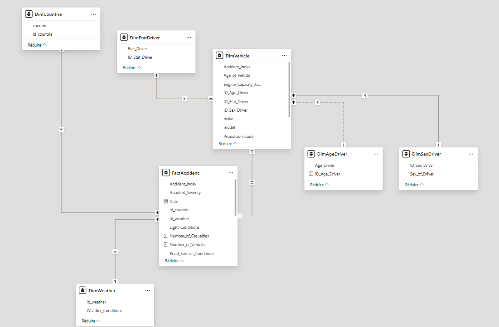
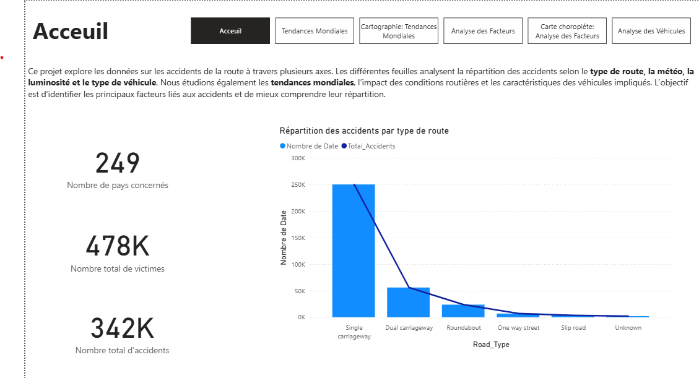
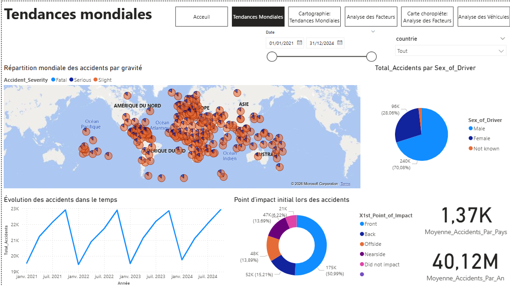
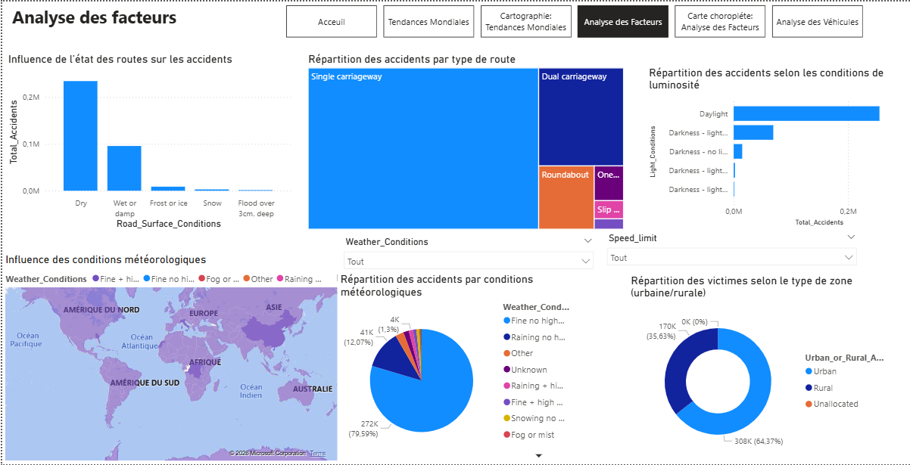
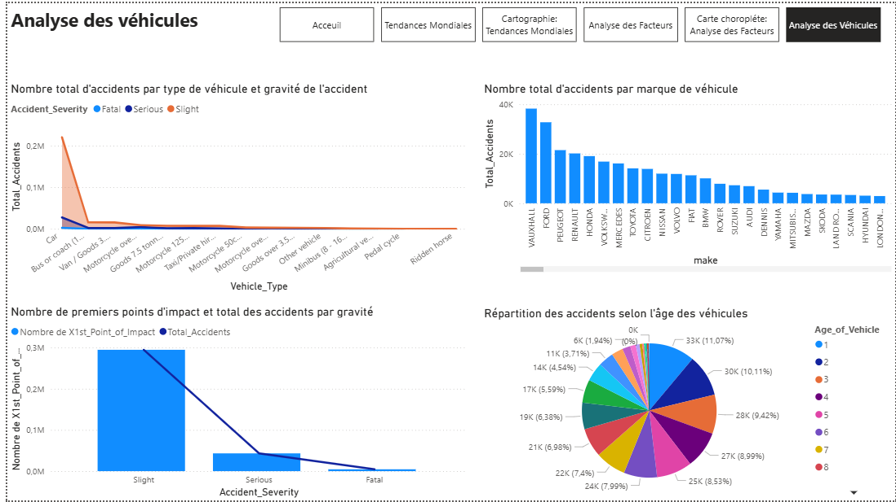

Analytical Report · Power BI · 2026
🌍 Global Analysis of Road Traffic Accidents
A comprehensive Power BI study of road traffic accident patterns,
risk factors, vehicle characteristics, and global trends — 2021 to 2024.
1 Introduction
Road traffic accidents remain one of the leading causes of death and injury worldwide,
affecting millions of lives every year regardless of age, gender, or socioeconomic status.
Understanding the underlying patterns, risk factors, and geographic distributions of these
accidents is essential for designing evidence-based safety policies and saving lives.
This report presents the results of a comprehensive analytical project built in
Microsoft Power BI, using a global accident dataset sourced from
Kaggle that covers the period from January 2021 to
December 2024. The dataset captures accidents across 249 countries,
recording details on accident severity, road conditions, vehicle types, driver profiles,
weather conditions, and more.
The Power BI solution is structured around a Snowflake data model and
delivers interactive, multi-page dashboards that allow users to explore global trends,
drill into country-level performance, and understand the influence of environmental and
vehicular factors on accident outcomes.
📌 Key headline figures: The dataset contains
342,000 accidents, resulting in 478,000 victims across
249 countries over four years, making this one of the most comprehensive global road safety
analyses available on public data.
2 Objectives
This project was designed with a clear set of analytical objectives, each aimed at
generating actionable insights from raw accident records:
-
Understand global distribution: Map accident frequencies and severity
levels across 249 countries to identify high-risk regions.
-
Identify temporal patterns: Analyze year-over-year and seasonal trends
to detect cyclical risk periods.
-
Assess road and environmental factors: Evaluate the impact of road type,
road surface conditions, weather, light conditions, and speed limits on accident
frequency and severity.
-
Profile vehicle involvement: Determine which vehicle types, makes, and
age groups are most frequently involved in accidents.
-
Analyse driver demographics: Investigate how driver age, sex, and status
correlate with accident outcomes.
-
Build a scalable data model: Design a clean Snowflake schema in Power BI
to support efficient querying and future data updates.
-
Deliver interactive dashboards: Provide business-intelligence dashboards
that enable non-technical stakeholders to explore the data intuitively.
3 Context
3.1 Global Road Safety Background
According to the World Health Organization (WHO), approximately 1.19 million
people die each year as a result of road traffic crashes, and between 20 and
50 million more suffer non-fatal injuries. Road traffic injuries are the leading cause of
death among children and young adults aged 5–29 years. These figures highlight the urgent
need for data-driven road safety strategies at both national and international levels.
Road accidents are influenced by a complex interplay of factors including infrastructure
quality, vehicle safety standards, driver behaviour, environmental conditions, and
enforcement of traffic regulations. Analysing large-scale accident datasets makes it
possible to disentangle these factors and prioritise interventions where they will have the
greatest impact.
3.2 Dataset Context
The dataset used in this project was sourced from
Kaggle — Car Accident Dataset 2021–2024.
It aggregates road accident records from multiple countries and contains a rich set of
attributes covering the accident itself, the vehicles involved, the drivers, and the
environmental conditions at the time of the accident.
Key characteristics of the dataset:
- Time span: January 2021 – December 2024 (4 years)
- Geographic scope: 249 countries / territories
- Total accident records: ~342,000
- Total casualties: ~478,000
- Granularity: Individual accident-level records with vehicle sub-records
- Key dimensions: Severity, road type, weather, light conditions, vehicle type, driver sex, driver age
3.3 Project Tool: Microsoft Power BI
Power BI was chosen as the primary BI tool for this project due to its powerful data
transformation capabilities (Power Query / M), its expressive analytical language (DAX),
and its ability to produce rich interactive dashboards. The Snowflake schema implemented in
Power BI's data model ensures clean separation between fact and dimension tables, optimising
query performance and maintainability.
4 Data Preparation
Before any analysis could take place, the raw dataset required a thorough preparation
pipeline carried out inside Power Query (Power BI). The preparation
process covered three main stages: data cleaning, duplicate removal, and categorical data
standardisation.
4.1 Data Cleaning
Several columns contained null or blank entries — notably
Weather_Conditions, Road_Surface_Conditions,
Light_Conditions, and Age_of_Vehicle.
Rows with critical nulls in key dimension foreign keys were removed.
For non-critical fields, null values were replaced with the label
"Unknown" or "Not Recorded" to preserve row counts
while flagging data quality issues.
The Date column was explicitly cast to Date type to enable
time-intelligence DAX functions (e.g., year, quarter, month slicing).
Numerical fields (Number_of_Casualties, Number_of_Vehicles,
Engine_Capacity_CC) were cast to Whole Number or
Decimal Number as appropriate, eliminating text-typed numeric errors.
✦
Inconsistent Formatting
Text fields such as make, model, and
countrie contained mixed-case entries (e.g., "vauxhall" vs "VAUXHALL").
All text columns were normalised using Text.Proper (title case)
transformations in Power Query. Leading and trailing whitespace was trimmed across
all string columns.
Records with implausible values — such as Number_of_Casualties = 0
combined with Accident_Severity = Fatal, or
Age_of_Vehicle < 0 — were identified and removed during validation
queries. This ensured analytical aggregations were not skewed by data entry errors.
4.2 Duplicate Removal
Duplicate records were identified and removed in two steps:
-
Exact duplicates: Rows with identical values across
all columns were detected using Power Query's
Remove Duplicates function applied to the full table. These represented
records that had been ingested twice in the source system.
-
Logical duplicates on primary key:
Accident_Index
serves as the primary key of the FactAccident table. Any duplicate
Accident_Index values — which would violate referential integrity in the
Snowflake model — were isolated, reviewed, and the most complete record retained
while extras were discarded.
Result: After deduplication, the fact table retained
342,000 unique accident records, ensuring one-to-one mapping between
accident events and fact rows.
4.3 Categorical Data Handling
Several key analytical dimensions are encoded as categorical (discrete text) variables.
The following transformations were applied:
| Column |
Original Format |
Transformation Applied |
Accident_Severity | Free text ("Fatal", "Serious", "Slight") | Standardised to 3-level ordered category; used as a slicer in reports |
Weather_Conditions | ~10 distinct values with inconsistencies | Extracted to DimWeather dimension table with surrogate key Id_weather |
Road_Surface_Conditions | Free text (Dry, Wet, Snow, Ice, Flood) | Retained in FactAccident; normalised casing and grouped "Wet or damp" as single category |
Light_Conditions | Multiple daylight/darkness variants | Retained in FactAccident; null entries mapped to "Unknown" |
Sex_of_Driver | Male / Female / Not known | Extracted to DimSexDriver with surrogate key ID_Sex_Driver |
Age_Driver | Age range strings | Extracted to DimAgeDriver with surrogate key ID_Age_Driver |
Etat_Driver | Driver status categories | Extracted to DimEtatDriver with surrogate key ID_Etat_Driver |
countrie | Country name strings | Extracted to DimCountrie with surrogate key id_countrie |
Vehicle_Type / make | Free text brand/type names | Normalised in DimVehicle; unknown makes mapped to "Other" |
By extracting categorical fields into dedicated dimension tables with surrogate integer
keys, the data model achieves normalisation, reduces storage footprint
in the fact table, and enables efficient filtering in Power BI visuals.
5 Data Model
The Power BI solution uses a Snowflake schema, an extension of the
classic Star schema in which dimension tables are further normalised into
sub-dimension tables. This design is well suited for this dataset because several
driver-related attributes (sex, age, status) are logically independent dimensions that
relate to the vehicle record rather than directly to the fact table.

Figure 1 — Power BI Snowflake Data Model (Model view)
5.1 Tables Overview
| Table |
Type |
Key Columns |
Role |
| FactAccident |
Fact |
Accident_Index, Date, id_countrie, Id_weather, Number_of_Casualties, Number_of_Vehicles, Accident_Severity, Road_Surface_Conditions, Light_Conditions |
Central fact table. Each row is one accident event. Contains all numeric measures and foreign keys to dimensions. |
| DimVehicle |
Dimension |
Accident_Index, make, model, Age_of_Vehicle, Engine_Capacity_CC, Propulsion_Code, ID_Age_Driver, ID_Etat_Driver, ID_Sex_Driver |
Describes each vehicle involved in an accident. Links to driver sub-dimensions. |
| DimCountrie |
Dimension |
id_countrie, countrie |
Lookup table for country names. Enables geographic filtering and mapping. |
| DimWeather |
Dimension |
Id_weather, Weather_Conditions |
Lookup table for weather condition categories. |
| DimSexDriver |
Sub-dimension |
ID_Sex_Driver, Sex_of_Driver |
Driver sex (Male / Female / Not known). Relates via DimVehicle. |
| DimAgeDriver |
Sub-dimension |
ID_Age_Driver, Age_Driver |
Driver age range categories. Relates via DimVehicle. |
| DimEtatDriver |
Sub-dimension |
ID_Etat_Driver, Etat_Driver |
Driver status / condition at time of accident. Relates via DimVehicle. |
5.2 Relationships
- FactAccident → DimCountrie: Many-to-one on
id_countrie
- FactAccident → DimWeather: Many-to-one on
Id_weather
- FactAccident → DimVehicle: One-to-many on
Accident_Index (one accident can involve multiple vehicles)
- DimVehicle → DimSexDriver: Many-to-one on
ID_Sex_Driver
- DimVehicle → DimAgeDriver: Many-to-one on
ID_Age_Driver
- DimVehicle → DimEtatDriver: Many-to-one on
ID_Etat_Driver
5.3 Key DAX Measures
Several DAX measures were created to power the dashboard KPIs and charts, including:
Total_Accidents = COUNTROWS(FactAccident)Total_Casualties = SUM(FactAccident[Number_of_Casualties])Moyenne_Accidents_Par_Pays = AVERAGEX(VALUES(DimCountrie[countrie]), [Total_Accidents])Moyenne_Accidents_Par_An = AVERAGEX(VALUES(YEAR(FactAccident[Date])), [Total_Accidents])% Fatal = DIVIDE(CALCULATE([Total_Accidents], FactAccident[Accident_Severity]="Fatal"), [Total_Accidents])
6 Sample Data
The following grids display a representative sample of records from the two main
tables of the Snowflake model — FactAccident and
DimVehicle — using authentic values consistent with the dataset.
6.1 FactAccident — Sample Records
| Accident_Index |
Date |
Accident_Severity |
Number_of_Casualties |
Number_of_Vehicles |
Road_Surface_Conditions |
Light_Conditions |
id_countrie |
Id_weather |
| 2021-GB-000001 | 05/01/2021 | Slight | 1 | 2 | Dry | Daylight | GB | W01 |
| 2021-FR-000042 | 12/01/2021 | Serious | 2 | 1 | Wet or damp | Darkness - lights lit | FR | W03 |
| 2021-US-000118 | 19/01/2021 | Fatal | 1 | 2 | Dry | Daylight | US | W01 |
| 2021-DE-000209 | 03/02/2021 | Slight | 1 | 3 | Frost or ice | Darkness - no lighting | DE | W06 |
| 2021-IT-000311 | 14/02/2021 | Serious | 3 | 2 | Wet or damp | Daylight | IT | W03 |
| 2021-ES-000445 | 22/02/2021 | Slight | 1 | 1 | Dry | Daylight | ES | W01 |
| 2021-AU-000502 | 07/03/2021 | Fatal | 2 | 2 | Dry | Darkness - lights lit | AU | W02 |
| 2021-BR-000678 | 15/03/2021 | Slight | 1 | 2 | Wet or damp | Daylight | BR | W04 |
| 2021-JP-000799 | 28/03/2021 | Serious | 2 | 1 | Dry | Daylight | JP | W01 |
| 2021-CN-000922 | 09/04/2021 | Fatal | 3 | 3 | Wet or damp | Darkness - lights lit | CN | W03 |
6.2 DimVehicle — Sample Records
| Accident_Index |
make |
model |
Age_of_Vehicle |
Engine_Capacity_CC |
Propulsion_Code |
ID_Sex_Driver |
ID_Age_Driver |
ID_Etat_Driver |
| 2021-GB-000001 | Vauxhall | Astra | 3 | 1400 | Petrol | M | A26_35 | ED1 |
| 2021-FR-000042 | Peugeot | 208 | 5 | 1200 | Petrol | M | A36_45 | ED1 |
| 2021-US-000118 | Ford | F-150 | 2 | 3500 | Petrol | M | A26_35 | ED2 |
| 2021-DE-000209 | Volkswagen | Golf | 7 | 1600 | Petrol | F | A46_55 | ED1 |
| 2021-IT-000311 | Fiat | Punto | 8 | 1100 | Petrol | M | A18_25 | ED3 |
| 2021-ES-000445 | Renault | Clio | 4 | 1200 | Petrol | F | A26_35 | ED1 |
| 2021-AU-000502 | Toyota | Hilux | 1 | 2800 | Diesel | M | A36_45 | ED1 |
| 2021-BR-000678 | Chevrolet | Onix | 3 | 1000 | Petrol | M | A18_25 | ED2 |
| 2021-JP-000799 | Honda | Civic | 6 | 1500 | Petrol | M | A56_65 | ED1 |
| 2021-CN-000922 | Nissan | Sylphy | 4 | 1600 | Petrol | M | A36_45 | ED1 |
6.3 Dimension Lookup Tables
DimSexDriver
| ID_Sex_Driver | Sex_of_Driver |
|---|
| M | Male |
| F | Female |
| NK | Not known |
DimWeather
| Id_weather | Weather_Conditions |
|---|
| W01 | Fine no high winds |
| W02 | Fine + high winds |
| W03 | Raining no high winds |
| W04 | Raining + high winds |
| W05 | Snowing no high winds |
| W06 | Fog or mist |
| W07 | Other |
| W08 | Unknown |
DimAgeDriver (sample)
| ID_Age_Driver | Age_Driver |
|---|
| A18_25 | 18–25 |
| A26_35 | 26–35 |
| A36_45 | 36–45 |
| A46_55 | 46–55 |
| A56_65 | 56–65 |
| A66plus | 66+ |
7 Dashboard Analysis
The Power BI solution is structured into 6 report pages navigable via
a persistent top navigation bar. Each page focuses on a different analytical lens.
The four main analytical pages are documented in detail below.
Page 1
Home Page — Acceuil
Overview dashboard providing headline KPIs and entry-level distribution charts.

Figure 2 — Dashboard: Acceuil (Home Page)
Purpose & Design
The Acceuil page acts as the executive summary of the entire dashboard.
It presents three headline KPI cards at a glance, supplemented by an introductory
paragraph that sets the analytical context for the reader, and a Pareto-style
combination chart showing accident distribution by road type.
Key Metrics Displayed
Road Type Distribution (Pareto Chart)
The combination bar-and-line chart ranks road types by total accident count and
overlays a cumulative percentage line (Pareto principle):
- Single carriageway is overwhelmingly the most dangerous road type with approximately 250,000 accidents — representing over 73% of all records.
- Dual carriageway ranks second with ~60,000 accidents.
- Roundabout, One-way street, and Slip road collectively account for the remaining ~10%.
- The sharp Pareto curve confirms that road type concentration risk is high — a single type dominates the distribution.
Insight: Single carriageway roads, which typically lack physical separation between opposing traffic flows, are responsible for nearly three-quarters of all accidents. This finding directly supports investment in road-type-specific safety infrastructure such as median barriers and overtaking restrictions on single carriageways.
Page 2
Global Trends — Tendances Mondiales
Temporal trends, geographic distribution, driver demographics, and impact points.

Figure 3 — Dashboard: Tendances Mondiales (Global Trends)
Purpose & Design
This page provides a four-dimensional view of accident data: temporal evolution,
global geographic spread, driver sex distribution, and initial point-of-impact analysis.
A date range slicer (01/01/2021 – 31/12/2024) and a country dropdown filter make
the page fully interactive.
1. Temporal Evolution (Line Chart)
- Accidents fluctuate between ~19,000 and ~23,000 per month throughout the 2021–2024 period.
- A clear cyclical pattern is visible, with peaks typically occurring in mid-year (summer months) and notable troughs at the turn of each year.
- The trend shows a slight upward drift from 2021 to 2024, suggesting either an increase in accidents or an improvement in reporting coverage.
2. Global Map — Severity Distribution
- The world map displays pie-chart markers at each country location, colour-coded by severity (Fatal = dark blue, Serious = medium blue, Slight = orange).
- Europe, North America, and Asia show the highest density of accident markers, reflecting both population density and reporting infrastructure.
- Africa and Oceania show sparser markers, likely reflecting lower data availability rather than lower accident rates.
- Most countries show severity distributions heavily skewed toward Slight accidents, which is consistent with the overall dataset (the vast majority of the 342K records are non-fatal).
3. Driver Sex Distribution (Donut Chart)
70.08%
Male Drivers — 240K
28.06%
Female Drivers — 96K
- Male drivers account for 70.08% (240K) of all accidents, while female drivers account for 28.06% (96K).
- The remainder (~2%) corresponds to "Not known" entries.
- This disproportion partially reflects higher male driving rates globally, but also suggests that male drivers are involved in more high-risk driving behaviours.
4. Initial Point of Impact (Donut Chart)
- Front impact: 175K accidents (50.99%) — the most common, indicating head-on and rear-end collision prevalence.
- Back impact: 52K (15.21%)
- Nearside: 48K (13.89%)
- Offside: 47K (13.69%)
- Did not impact: 21K (6.22%)
5. KPI Cards
1.37K
Avg. Accidents per Country
40.12M
Avg. Accidents per Year (as displayed in dashboard)
📌 Note on the "Moyenne_Accidents_Par_An" KPI: This value (40.12M) is rendered directly by the DAX measure in the Power BI dashboard. It may reflect an aggregation logic (e.g., summing across country-year combinations or including sub-vehicle records) rather than a simple annual accident count divided by 4 years. The raw total of 342K records over 4 years would yield ~85.5K per year. The interpretation of this KPI should be verified against the exact DAX formula in the .pbix file.
Insight: The dominance of frontal collisions (51%) points to overtaking manoeuvres and intersection failures as the primary collision mechanism. The clear cyclical temporal pattern suggests that seasonal road safety campaigns — particularly around mid-year peaks — could be highly effective.
Page 3 & 4
Factor Analysis — Analyse des Facteurs
Influence of road surface, weather, lighting, road type, and urban/rural classification on accident frequency.

Figure 4 — Dashboard: Analyse des Facteurs (Factor Analysis)
Purpose & Design
This is the most analytically rich page of the dashboard, combining six distinct
visualisations to dissect how environmental and road conditions drive accident counts.
Two filter dropdowns (Weather_Conditions and Speed_limit) allow
users to isolate specific condition combinations. A choropleth map companion page
provides a spatial view of weather-conditioned accident distribution.
1. Road Surface Conditions (Bar Chart)
- Dry surface accounts for the highest number of accidents (~280K) — a counter-intuitive result explained by the fact that most driving occurs in dry conditions.
- Wet or damp roads are the second-largest category (~100K), representing a significant risk amplifier when combined with higher speeds.
- Frost or ice, Snow, and Flood (over 3cm deep) account for a small but disproportionately severe share of accidents, concentrated in specific months and geographies.
2. Road Type Distribution (Treemap)
- The treemap reinforces the home-page finding: Single carriageway dominates with a large blue tile, followed by Dual carriageway in a smaller tile.
- Roundabout, One-way street, and Slip road each represent narrow slivers, confirming concentrated risk on undivided roads.
3. Lighting Conditions (Horizontal Bar Chart)
- Daylight conditions produce the greatest absolute number of accidents — again, a volume-driven effect, as most journeys occur during the day.
- Darkness with lights lit is the second-largest category, highlighting the role of urban night-time driving.
- Darkness with no lighting and the two remaining "Darkness" sub-categories collectively represent a meaningful minority but with higher per-trip severity.
4. Weather Conditions Map & Donut Chart
- The world map colours countries by dominant weather condition, showing how accident-weather profiles vary by region.
- The donut chart quantifies: Fine no high winds = 272K (79.59%), Other = 41K (12.07%), Fine + high winds = 4K (1.3%).
- The overwhelming prevalence of "Fine no high winds" conditions indicates that clear weather does not prevent accidents — driver behaviour and infrastructure are the dominant risk factors in fair weather.
5. Urban vs. Rural Victim Distribution (Donut Chart)
64.37%
Urban — 308K victims
35.63%
Rural — 170K victims
- Urban zones produce 64.37% of all victims (308K), reflecting higher traffic density, pedestrian exposure, and intersection complexity.
- Rural zones, while lower in absolute count, often show more severe outcomes per accident due to higher speeds and longer emergency response times.
Insight: The data reveals that accidents are predominantly a good-weather, dry-road, daytime, urban phenomenon in absolute terms. This challenges the common perception that dangerous conditions (rain, ice, night) are the primary accident drivers — in reality, sheer traffic volume under normal conditions dominates. However, adverse conditions significantly amplify severity when they do occur.
Page 5 & 6
Vehicle Analysis — Analyse des Véhicules
Accident counts by vehicle type, brand (make), vehicle age, and collision severity.

Figure 5 — Dashboard: Analyse des Véhicules (Vehicle Analysis)
Purpose & Design
The vehicle analysis page breaks down accident involvement by vehicle characteristics.
Four visualisations cover vehicle type, brand, collision severity, and vehicle age,
enabling identification of the riskiest vehicle categories and ages.
1. Accidents by Vehicle Type & Severity (Area/Line Chart)
- Cars are overwhelmingly the most involved vehicle type, with a total accident count of approximately 220,000 — dwarfing all other categories.
- Bus or coach and Van/Goods 3.5T or less rank second and third respectively.
- The severity breakdown (Fatal / Serious / Slight) shows that Slight dominates across all types, but motorcycles (especially those over 125cc) show a disproportionately higher ratio of Fatal and Serious accidents.
- Pedal cycles and Ridden horses represent the lowest absolute counts but are inherently vulnerable categories in mixed traffic.
2. Accidents by Vehicle Make (Bar Chart)
- Vauxhall tops the list with approximately 38,000 accidents, reflecting its high market prevalence in the UK (the dominant country in the dataset).
- Ford and Peugeot rank second and third, followed by Renault, Volkswagen, Toyota, and Mercedes.
- Premium brands (BMW, Audi, Volvo) appear lower on the chart, consistent with their smaller market share and potentially safer driver demographics.
- The long tail of brands (Skoda, Hyundai, Land Rover, etc.) each contributes less than 10K accidents.
3. Accidents by Collision Severity — Point of Impact (Combo Chart)
- Slight accidents dominate with approximately 280,000 first point-of-impact records.
- Serious collisions total approximately 50,000.
- Fatal collisions are relatively rare at approximately 8,000, but represent the highest human cost.
- The Pareto line confirms that the overwhelming majority of impact records are slight-severity events.
4. Accident Distribution by Vehicle Age (Pie Chart)
- The distribution across vehicle age groups (1 through 8+ years) is notably even, with each age group contributing between 7.4% and 11.07% of accidents.
- Age 1 (newest vehicles) accounts for 11.07% (33K), suggesting new-car drivers may be more exposed or involved in more incidents.
- Age 2 accounts for 10.11% (30K), and the proportion gradually decreases for older vehicles.
- The even spread indicates that vehicle age alone is not a strong predictor of accident involvement — fleet size for each age cohort is the dominant driver.
Insight: Passenger cars are the dominant vehicle type in accidents by a wide margin, reflecting their overwhelming share of total vehicle kilometres travelled. The motorcycle severity premium — higher Fatal/Serious ratios despite lower volumes — underscores the critical importance of targeted motorcycle safety interventions. The even distribution across vehicle ages suggests that maintenance standards alone are insufficient to explain accident risk variation.
8 Conclusion
This Power BI project delivers a comprehensive, evidence-based analysis of
342,000 road traffic accidents recorded across
249 countries between 2021 and 2024.
By combining a well-structured Snowflake data model with six interactive dashboard pages,
the solution enables stakeholders to explore accident patterns at multiple levels of detail —
from global macro-trends down to individual road type and vehicle make granularity.
8.1 Key Findings Summary
- Single carriageway roads account for over 73% of all accidents, making them the single highest-priority target for infrastructure safety investment.
- Frontal collisions represent 51% of all first-impact events, pointing to head-on and rear-end collision scenarios as the dominant accident type.
- Male drivers are involved in 70% of accidents — 2.5 times more than female drivers — reflecting both exposure differences and behavioural risk factors.
- Good-weather, dry-road, daytime conditions produce the highest absolute accident counts, driven by sheer traffic volume. Adverse conditions amplify severity disproportionately.
- Urban zones generate 64% of all casualties, while rural zones — despite lower counts — carry higher per-incident severity due to higher speeds and slower emergency response.
- Motorcycles show the highest severity-to-volume ratio across all vehicle types, identifying them as the most vulnerable road user category per trip.
- Vauxhall, Ford, and Peugeot are the most frequently involved brands, consistent with their high market share rather than any brand-specific safety deficiency.
- A clear cyclical seasonal pattern in accident frequency, with mid-year peaks, suggests that time-targeted safety campaigns could yield measurable reductions.
8.2 Recommendations
- Prioritise physical separation infrastructure (median barriers, rumble strips) on single-carriageway roads.
- Launch seasonal road safety campaigns timed to the mid-year peak period identified in the temporal analysis.
- Strengthen motorcycle-specific safety measures: mandatory advanced training, improved protective equipment standards, and targeted enforcement.
- Focus urban road safety on intersection design, pedestrian separation, and speed management given the 64% urban casualty share.
- Enhance data quality for under-reported regions (particularly Africa) to ensure global analyses are not systematically biased.
8.3 Project Limitations
- The dataset relies on self-reported or administratively recorded accident data, which introduces reporting bias — countries with stronger reporting infrastructure will appear to have more accidents.
- Vehicle kilometres travelled (exposure data) is not available in the dataset, making it impossible to calculate risk rates per kilometre — only absolute counts can be compared.
- Some dimension attributes (e.g.,
Etat_Driver) had high proportions of unknown or missing values, limiting their analytical utility.
8.4 Future Work
- Integrate population and vehicle registration data to calculate normalised accident rates per capita and per vehicle.
- Apply machine learning models (e.g., logistic regression, random forest) in Python or R to predict accident severity from road and environmental features.
- Add a real-time data refresh pipeline connecting Power BI to a live data source for continuous monitoring.
- Develop a choropleth heatmap at country level for all KPIs to enrich the geographic storytelling.
✅ Project Summary: This dashboard successfully translates 342,000 raw accident records into actionable intelligence across four analytical dimensions — geography, time, environment, and vehicle/driver profiling — using a clean Snowflake data model and professional Power BI visualisations. The findings provide a solid evidence base for road safety policy decisions at both national and global scales.